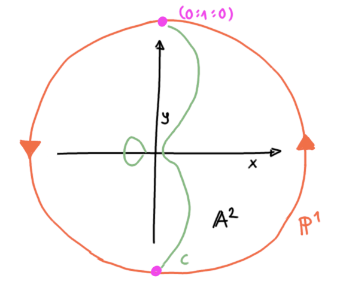
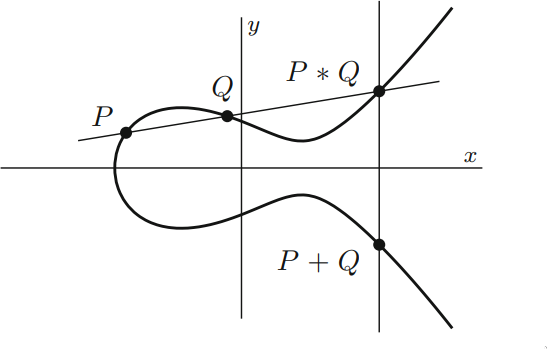
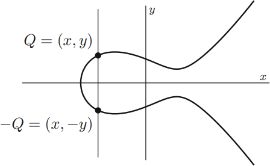

Erinnerung:
Mordell's Theorem
Wenn eine nicht singuläre rationale kubische Kurve
\(C\subset \mathbb{P}^2(\mathbb{Q})\) in der
Ebene einen rationalen Punkt hat, so ist die Gruppe der
rationalen Punkte endlich erzeugt.
möchten wir beweisen! Wir werden dabei noch \(\mathcal{O}\in C\)
als Punkt im Unendlichen betrachten.
Um beweisen zu können, müssen wir unsere
Ausgangssituation vereinfachen!
Kubische Kurve:
\[C:ax^3+bx^2y+cxy^2+dy^3\\+ex^2+fxy+gy^2+hx+iy+j=0\]
allgemeine Weierstraß-Normalform:
\[C: P=0 \text{ ersetzen durch } C': y^2=x^3+g_1x+g_2\]
1.3
Weierstraß-Normalform
Weierstraß-Normalform |
| klassisch |
allgemein |
| \(y^2=4x^3-\textcolor{#87ba83}{g_2}x-\textcolor{#87ba83}{g_3}\) |
\(y^2+\textcolor{#f06f48}{a}xy+\textcolor{#f06f48}{b}y=x^3+\textcolor{#f06f48}{c}x^2+\textcolor{#f06f48}{d}x+\textcolor{#f06f48}{e}\) |
Wir möchten demnächst nur noch elliptische Kurven der Form
\[y^2=x^3+ax^2+bx+c\] betrachten müssen
\(C\) kubische Kurve \(\xrightarrow[\text{Äquivalent}]{\text{birational}}\) WNF*
* besser: Weierstraß-Form
Betrachte dazu folgende Konstruktion:
Schritt 1
Sei \(C\) eine kubische Kurve in projektiver Ebene \(\mathbb{P}^2\)
mit \(\mathcal{O}\), einem rationalen Punkt auf \(C\).
Verändere/wähle Achsen so, dass wir eine einfachere Form
erhalten.

Schritt 2
Wir nehmen die Tangente von \(\mathcal{O}\) und verwenden
sie als unser \(Z=0\), also unsere \(Z\)-Achse.

Schritt 3
Diese Tangente schneidet die Kurve an einer weiteren Stelle
\((0:1:0)\) und die Tangente an dieser Stelle wird unsere
\(X\)-Achse.
Wenn \(\mathcal{O}\) ein Wendepunkt (point of inflection) ist,
können wir eine beliebige Gerade wählen, welche nicht durch
\(\mathcal{O}\) geht. Da es nach Bezout keinen weiteren
Schnittpunkt gibt.

Schritt 4
Zuletzt wählen wir noch eine beliebige Gerade, welche durch
\(\mathcal{O}\) geht als unsere \(Y\)-Achse

Schritt 5
\[\underbrace{x=\frac{X}{Z}, \quad y=\frac{Y}{Z}}_{\text{Dehomogenisierung}}\]
Neue Form der Gleichung:
\[xy^2+(ax+b)y=cx^2+dx+e\]
Auf beiden Seiten mit \(x\) multiplizieren:
\[(xy)^2+(ax+b)xy=cx^3+dx^2+ex\]
Schritt 6
Substituiere \(xy\) in \(y\) um:
\[y^2+(ax+b)y=cx^3+dx^2+ex\]
Substituiere \(\left(y-\frac{ax+b}{2}\right)\) zu \(y\)
(lineare Transformation) um, was effektiv durch
quadratische Ergänzung
unser Resultat:
\[y^2 = \text{kubische Funktion in } x\]
Betrachten wir ein Beispiel:
\[ u^3+v^3=\alpha, \quad \alpha \in\mathbb{Q} \]
Schritt 1
- Projektivieren: \(U^3+V^3 = \alpha W^3\)
- Finde \(\mathcal{O}=(1:-1:0)\)
- Weil \(\mathcal{O}\) ein Inflektionspunkt ist, können
wir \(X=0\) fast frei wählen
Wir erhalten: \[x=\frac{12\alpha}{u+v}, \quad y=36\alpha\frac{u-v}{u+v}\]
Schritt 2
Durch Umformungen erkennen wir, dass \(x,y\) die WNF erfüllen:
\[y^2=x^3-432\alpha^2\]
Explizit können wir dies nachprüfen, indem wir \(u,v\) einsetzen:
\[
- \frac{1728 \alpha^{3}}{\left(u + v\right)^{3}} + \frac{1296 \alpha^{2} \left(u - v\right)^{2}}{\left(u + v\right)^{2}} + 432 \alpha^{2}
\]
Ausmultiplizieren ergibt:
\[ \displaylines{- \frac{1728 \alpha^{3}}{u^{3} + 3 u^{2} v + 3 u v^{2} + v^{3}} + \frac{1296 \alpha^{2} u^{2}}{u^{2} + 2 u v + v^{2}} \\- \frac{2592 \alpha^{2} u v}{u^{2} + 2 u v + v^{2}} + \frac{1296 \alpha^{2} v^{2}}{u^{2} + 2 u v + v^{2}} + 432 \alpha^{2}} \]
Und zuletzt Vereinfachen:
\[ \frac{1728 \alpha^{2} \left(- \alpha + u^{3} + v^{3}\right)}{u^{3} + 3 u^{2} v + 3 u v^{2} + v^{3}} \]
Wir sehen also, dass wenn \(y^2=x^3-432\alpha^2\) eine Lösung
hat, so auch \(u^3+v^3=\alpha\).
Schritt 3
Wir können den Prozess auch rückwärts gehen und \(u,v\) durch
\(x,y\) darstellen, mit:
\[u=\frac{36\alpha+y}{6x}, \quad v=\frac{36\alpha-y}{6x}\]
Wenn wir rationale Lösungen für \(y^2=x^3-432\alpha^2\) haben,
so haben wir auch rationale Lösungen für \(u^3+v^3=\alpha\) und
umgekehrt auch.
Es gibt nur endlich viele Ausnahmen (z.B. wenn \(u=-v\))
aber diese sind schnell zu finden.
Fazit:
Rationale Punkte auf \(C\) stehen 1:1 zu rationale Punkte
auf WNF von \(C\) für jede kubische Kurve \(C\)
(Bis auf endlich viele Ausnahmen)
Rückblick
Das Problem der rationalen Punkte auf kubischen Kurven
mit mindestens einem rationalen Punkt wurde
deutlich einfacher!
Wir müssen nur noch die rationalen Punkte auf der WNF
betrachten!
Transformationen haben Geraden nicht
auf Geraden geschickt.
Wird Gruppenstruktur (siehe. Seminar Daniel) erhalten?
Ja! Unsere Transformationen sind also ein (nicht trivialer)
Gruppenisomorphismus.
Additionsgesetz ist intrinsisch zur Kurve, also
invariant unter birationaler Transformation.
Geschichte
"Elliptische Kurven" (birational äquivalent zu
\(y^2=f(x)=x^3+ax^2+bx+c\) mit \(f(x)\) verschiedene komplexe Wurzeln)
entsprangen dem Errechnen der Bogenlänge von Ellipsen.
Um Länge von Ellipse zu berechnen, muss man eine Funktion
\(y=\sqrt{f(x)}\) integrieren.
Durch
\[y^2=\underbrace{x^3+ax^2+bx+c}_{f(x)}, \quad a,b,c\in\mathbb{Q}\]
können wir elliptische Kurven
genauer verstehen
Für eine elliptische Kurve muss also \(f(x)\) verschiedene
(komplexe) Wurzeln haben. Aber wieso?
Nach Klassifikation der irreduziblen Polynome in
\(\mathbb{R}[x]\) muss \(f(x)\) mindestens eine relle Wurzel
\(\alpha\) haben.
\(f(x)\) kann jedoch auch 3 relle Wurzeln haben. Dann haben wir
zwei zusammenhängende Teilmengen.
(Angenommen Wurzeln sind paarweise verschieden)
Wenn Wurzeln nicht paarweise verschieden sind, also
\(f(x)\) nicht quadratfrei ist, so muss die
Kurve:
\[C:\underbrace{y^2-f(x)}_{F(x,y)}=0\]
Singularitäten besitzen!
Beweis
\[\frac{\partial F}{\partial x}=-f'(x), \quad \frac{\partial F}{\partial y}=2x\]
Singularitäten können also nur auf der \(x\)-Achse vorkommen.
Also wenn \((x_0,y_0)\) Singularität, so \(y_0=0\).
Daher \(f(x_0)=y_0^2=0\) und \(f(x)\) und \(f'(x)\) haben
gemeinsame Wurzel bei \(x_0\).
Welche Arten von Singularitäten können auftreten?
| \(f(x)\) |
| doppelte Wurzel |
dreifache Wurzel |
| reelle Richtungen der Tangenten |
komplexe Richtungen der Tangenten |
|
Kegelschnitte und Singularitäten
Sei \(L\) eine Gerade, welche durch den singulären Punkt \(P\) geht.
\(L\) schneidet nur einen weiteren Punkt auf der Kurve \(C\),
da \(L\) bereits \(P\) doppelt schneidet.
Wir können also die Schnittpunkte von \(L\) betrachten. Das
ergibt eine Projektion der Kurve \(C\) auf eine
Gerade, welche bijektiv ist.
Korrelation zu Kegelschnitten, wo die rationalen Punkte
auch 1:1 zu den Punkten auf einer Gerade im Verhältnis
stehen!
Gegenbeispiel
\[y^2=x^3-x\]
1.4
Explicit Formulas for the Group Law
Punkt bei Unendlich
Betrachte wieder kubische Kurve
\[y^2=x^3+ax^2+bx+c\]
Und ihre Projektivierung
\[Y^2Z=X^3+aX^2Z+bXZ^2+cZ^3\]
Wenn wir \(Z=0\) setzen, so sehen wir nur noch die
Nullstellen auf der Gerade bei Unendlich.
\[Y^2\cdot 0=X^3+aX^2\cdot 0+bX\cdot 0^2+c\cdot 0^3\]
\[\Leftrightarrow 0=X^3\]
Wir erkennen also, dass es auf der line at infinity nur
eine dreifache Nullstelle
gibt!
\(X=0, \> Z=0\) korrespondiert zu \(\mathcal{O} = (0:1:0)\), also den
vertikalen Linien, wenn man \(\mathbb{P}^2 = \mathbb{A}^2 \dot\cup \mathbb{P}^1\)
disjunkt zerlegt.
Beispiel
\(y^2=x(x-1)(x+1)\)

Tipp: nahe heranzoomen und mit Maus Kamera zur Seite drehen.
Quelle
Point at infinity - nicht singulär (1)
\[P=Y^2Z-X^3-aX^2Z-bXZ^2-cZ^3\]
Berechne Ableitungen
\[
\begin{aligned}
\frac{\partial P}{\partial X} &= -9X^2 - 2aXZ - bZ^2 \\
\frac{\partial P}{\partial Y} &= 2YZ \\
\frac{\partial P}{\partial Z} &= Y^2 - aX^2 - 2bXZ - 3Z^2
\end{aligned}
\]
Point at infinity - nicht singulär (2)
\[P=Y^2Z-X^3-aX^2Z-bXZ^2-cZ^3\]
Ableitungen für \(\mathcal{O}\) ausrechnen
\[
\begin{aligned}
\left(
\frac{\partial P}{\partial X},
\frac{\partial P}{\partial Y},
\frac{\partial P}{\partial Z},
\right)(\mathcal{O})
&= (0,0,1) \\
&\neq (0,0,0)
\end{aligned}
\]
Somit ist \(\mathcal{O}\) kein singulärer Ort!
*Er ist jedoch ein Wendepunkt (point of inflection)
und wir behandeln \(\mathcal{O}\) als einen rationalen Punkt.
Betrachten wir nun das Gruppengesetz mit \(\mathcal{O}\)
als Einheit
Informationen zu \(\mathcal{O}\)
Weil kubische Kurve birational äquivalent zu WNF, können wir
von nur einem Punkt im unendlichen ausgehen: \(\mathcal{O}\),
weil \(X=0\) dreifache nullstelle bei \(Z=0\).
Somit können wir elliptische Kurve unverändert im affinen
Raum als Lösungen \((x,y)\) zusammen mit \(\mathcal{O}\)
betrachten.
Interessanter Nebeneffekt: Jede Gerade schneidet nun immer
unsere Kurve in genau drei Punkten!
Addition von Punkten mit \(\mathcal{O}\) als Einheit
\[\begin{aligned}
&+ : C \times C \to C, \\
&P + Q = (P \ast Q) \ast \mathcal{O}
\end{aligned}\]

Addition von Punkten mit \(\mathcal{O}\) als Einheit - Beweis
Beachte, dass \(\mathcal{O}\) unter \(\mathbb{P}^2 = \mathbb{A}^2 \dot \cup \mathbb{P}\)
den vertikalen Geraden entspricht. Somit ist \(S\ast \mathcal{O}\)
eine Reflektion entlang der \(x\)-Achse, da
WNF stets Achsensymmetrisch ist.
Siehe folgende Grafiken:
Negation von Punkten mit \(\mathcal{O}\) als Einheit
\[\begin{aligned}
&- : C \to C, \\
&-(x,y) = (x,-y)
\end{aligned}\]

Negation von Punkten mit \(\mathcal{O}\) als Einheit - Beweis
\[Q+(-Q) = (Q \ast (Q\ast \mathcal{O}))\ast \mathcal{O}\]
Wobei \((Q\ast \mathcal{O})\) der Reflektion entlang der
\(x\)-Achse entspricht.
Der einzige Punkt, welcher von Gerade durch \(Q\) und \(-Q\)
geht, ist der Punkt im unendlichen \(\mathcal{O}\).
Die Gerade durch den Punkt im unendlichen und den Punkt im
unendlichen trifft nur den Punkt im unendlichen. Siehe:
diese Grafik
Wir möchten dies nun effizient realisieren!
Wir brauchen:
- \(P_1 = (x_1,y_1)\)
- \(P_2 = (x_2,y_2)\)
- \(P_1\ast P_2 = (x_3,y_3)\)
- \(P_1+ P_2 = (x_3,-y_3)\)
Unter Annahme, dass nur Punkte aus \(\mathbb{A}^2\)
addiert werden sollen!
\[\begin{aligned}
\text{Sekante}_{P_1,P_2}(t) &= \lambda t+\nu\\
&\text{mit } \\
& \lambda = \frac{y_2-y_1}{x_2-x_1} \\
& \nu = y_1-\lambda x_1 = y_2-\lambda x_2
\end{aligned}\]
\[\begin{aligned}
&S(x)^2=x^3+ax^2+bx+c \\
\Leftrightarrow& 0=x^3+(a-\lambda^2)x^2+(b-2\lambda\nu)x+(c-\nu^2) \\
\Leftrightarrow& 0=(x-x_1)(x-x_2)(x-x3)
\end{aligned}\]
\[x_3=\lambda^2-a-x_1-x_2, \quad y_3 = \lambda x_3+\nu\]
Was ist mit \(\lambda=\frac{y_2-y_1}{x_2-x_1}\), wenn \(P_1\)
und \(P_2\) der selbe Punkt sind?
Wir betrachten Tangente statt Sekante. Durch
implizite Differenzierung
setzen wir
\[\lambda = \frac{\partial y}{\partial x}\Bigg|_{P_0} = \frac{f'(x_0)}{2y_0}\]
Wir haben auch die explizite duplication Formula,
"dup" welche für einen Punkt \(P=(x,y)\) die Berechnung
der \(x\)-Coordinate von \(2P = P+P\) erleichtert:
\[\begin{aligned}
2(x,y) &= (\text{dup}(x,y), -\text{sign}(x,y)\sqrt{\text{dup}(x,y)}) \\
&\text{mit} \\
&\text{dup}(x,y) = \frac{x^4-2bx^2-8cx+b^2-4ac}{4x^3+4ax^2+4bx+4c} \\
&\text{sign}(x,y) = \text{sign}(y)
\end{aligned}\]
© 2021
Luca Leon Happel
|
PDF version
Basierend auf "Rational Points on Elliptic Curves" von
Joseph H. Silverman und John T. Tate.
Weitere nützliche Projekte (100% von mir geschrieben) zu
diesem Thema:
Tipp: Klicken Sie auf "desmos" in den Grafiken um mit den
Parametern dieser zu interagieren!